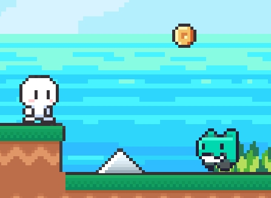

2Dアクションゲーム
2023/01/13
ゲームへのリンク
ゲームは https://unityroom.com/games/test123456789 にアクセスすると、誰でもプレイできます。ぜひお試しください。
使用環境としてはパソコンを想定しています。
なお、PCの環境によっては正しく動作しない可能性があります。予めご了承ください。
ゲームの説明･遊び方
このゲームは、2Dのアクションゲームです。
パソコンの｢←｣｢→｣キーでキャラクタが左右に移動します。｢↑｣キーでジャンプします。
ステージ上の足場を駆使して上へ上へと登り、ゴールを目指してください。
ただし、トゲやテキ(敵)からダメージを受けるとライフが１減り、スタート地点などに戻されてしまいます！
ライフが０の状態で当たるとゲームオーバーです。
なお、テキは上から踏むと倒すことができます。テキを倒したり、道中のコインを獲得すると、Scoreを獲得します。
ゲームをプレイするには、Unityが使用できるPCで https://unityroom.com/games/test123456789 にアクセスしてください。
なお、一部のPCでは動作しない場合がありますので、予めご了承ください。
ゲームの開発について
漠然とゲームを作ってみたいと思って、制作しました。
初めての挑戦だったので、YouTubeの解説動画などを参考にして制作しました。
それでも、エラーやバグで心が折れそうになりましたが、無事に作り終えることができました。